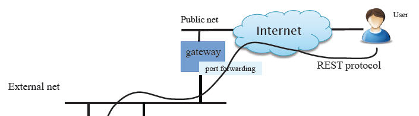
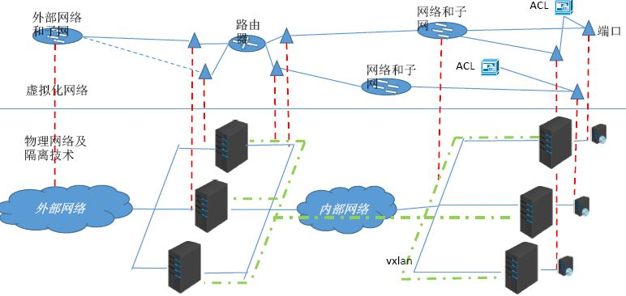
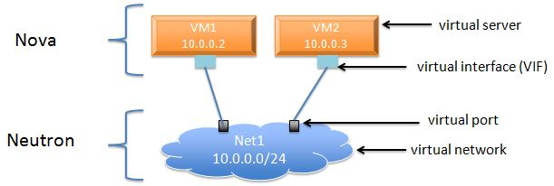
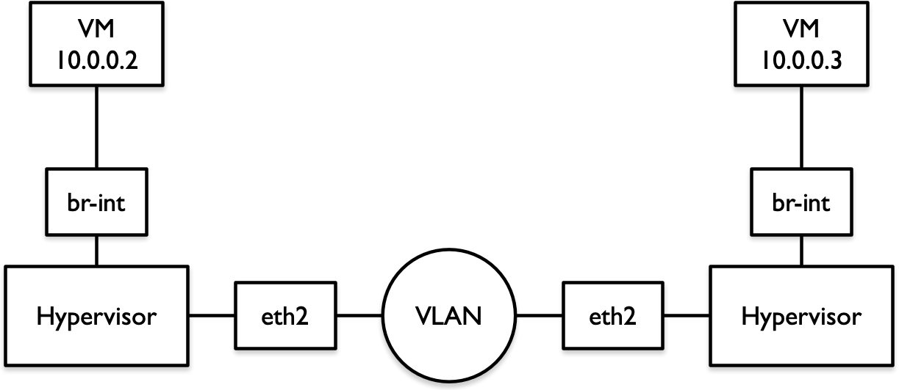

目录
- 为什么要网络虚拟化
- Neutron网络虚拟化
- Neutron中的网络连通性
- Neutron租户网络的隔离性（Isolation of Tenant Network）
- Neutron租户网络的安全性（Security）
- Neutron租户网络的高可用性（HA）和扩展性（Scalability）
- Neutron扩展服务（Extension Service）
- Neutron REST API
- Neutron的实现框架
为什么要网络虚拟化
- 数据中心的现有网络不能满足云计算的物理需求。
- 数据中心的现有网络不能满足云计算的软件即SDN要求。
现有的物理网络不能满足云计算的需求
互联网数据中心的基本特征就是服务器规模偏大。进入云计算时代后，其业务特征变得更加复杂，包括虚拟化支持、多业务承载、资源灵活调度等。与此同时，互联网云计算的规模不但没有缩减，反而更加庞大，这就给云计算的网络带来巨大压力。
- 虚拟化支持
- 提供云平台支撑
- 快速部署
- 灵活迁移
- 多业务承载
- 承载多种业务
- 主机托管业务安全隔离及访问控制
- 资源灵活性
- 业务资源任意迁移
- 业务、资源与物理位置无关
大容量的MAC表项和ARP表项
虚拟化会导致更大的MAC表项。
假设一个互联网云计算中心的服务器有5000台，按照1:20的比例进行虚拟化，则有10万个虚拟机。通常每个虚拟机会配置两个业务网口，这样这个云计算中心就有20万个虚拟网口，对应的就是需要20万个MAC地址和IP地址。云计算要求资源灵活调度，业务资源任意迁移。也就是说任意一个虚拟机可以在整个云计算网络中任意迁移。这就要求全网在一个统一的二层网络中。全网任意交换机都有可能学习到全网所有的MAC表项。与此对应的则是，目前业界主流的接入交换机的MAC表项只有32K，基本无法满足互联网云计算的需求。另外，网关需要记录全网所有主机、所有网口的ARP信息。这就需要网关设备的有效ARP表项超过20万。大部分的网关设备芯片都不具备这种能力。4K VLAN Trunk问题
传统大二层网络支持任意VLAN的虚拟机迁移到网络的任意位置，一般有两种方式。- 虚拟机迁移后，通过自动化网络管理平台动态的在虚拟机对应的端口上下发VLAN配置；同时，还有动态删除迁移前虚拟机对应所有端口上的VLAN配置，这种方式缺点是非常复杂，同时自动化管理平台对厂商设备还面临兼容性问题，所以很难实现。
- 在云计算网络上静态配置VLAN，在所有端口上配置VLAN Trunk All。这种方式的优点是非常简单，是目前主流的应用方式，但是也带来了巨大的问题：任一VLAN内如果出现广播风暴，则全网所有VLAN内的虚拟机都会受到风暴影响，出现业务中断。
4K VLAN上限问题
云计算网络中有可能出现多租户需求。如果租户即业务的数量规模超出VLAN的上限（4K），则无法支撑客户的需求。虚拟机迁移网络依赖问题
VM迁移需要在同一个二层域内，基于IP子网的区域换分限制了二层网络连通性的规模。
云计算的SDN要求
数据中心（Data Center）中的网络是固定的、需要手工配置的、单一的、没有多租户隔离的网络。
{kind=link}
而云架构往往都是多租户架构，这意味着多个客户会共享单一的物理网络。因此，除了提供基本的网络连接能力之外，云还需要提供网络在租户之间的隔离能力；同时云是自服务的，这意味着租户可以通过云提供的API来使用虚拟出来的网络组建来设计、构建和部署各种他们需要的网络。
{kind=link}
{kind=link}
OpenStack云也不例外。OpenStack通过Neutron项目在物理网络环境之上提供满足多租户要求的虚拟网络和服务。Neutron提供的网络虚拟能力包括：
- 二层到七层网路的虚拟化：L2（Virtual Switch）、L3（Virtual Router和LB）、L4-L7（Virtual Firewall）等。
- 网络连通性：二层网络和三层网络。
- 租户隔离性。
- 网络安全性。
- 网络扩展性。
- REST API。
- 更高的网络服务，包括LBaaS、FWaaS、VPNaaS等。
Neutron网络虚拟化
在实际的数据中心中，网络可以分为三层：OpenStack Cloud Network、机房Intranet（External Network），以及真正的外部网络即Internet。External网络和Internet之间是数据中心的Uplink路由器，它负责通过NAT来进行两个网络之间的IP地址（即Floating IP和Internet/Public IP）转换，因此，这部分的控制不在OpenStack控制之下。

RedHat提供的OpenStack Cloud Network网络架构。
{kind=link}
大概的分类的话，分为管理网络和数据网络，数据网络中关键的是租户网络，用于租户虚拟机之间的通信。这部分也是Neutron所实现的网络虚拟化的核心。在目前的Neutron实现中，Neutron向租户提供虚拟的网络（network）、子网（subnet）、端口（port）、交换机（switch）、路由器（router）等网络组件。下图显示了虚拟网络和物理网络的映射关系：

网络（L2 Network）
网络（Network）是一个隔离的二层网段，类似于物理网络世界中的虚拟LAN（VLAN）。更具体来讲，它是为创建它的租户而保留的一个广播域，或者被显式配置为共享网段。端口和子网始终被分配给某个特定的网络。这里所谓的隔离，可以理解为：
- 跨网络的子网之间的流量必须走L3 Virtual Router。
- 每个网络使用自己的DHCP Agent，每个DHCP Agent在一个Network NameSpace内。
- 不同网络内的IP地址可以重复（overlapping）。
根据创建网络的用户的权限，Neutron Network可以分为：
- Provider Network：管理员创建的和物理网络有之间映射关系的虚拟网络。
- Tenant Network：租户普通用户创建的网络，物理网络对创建者透明，其配置由Neutron根据管理员在系统中的配置决定。
虚拟机可以直接挂载到Provider Network或者Tenant Network上。
根据网络的类型，Neutron Network可以分为：
- VLAN Network（虚拟局域网）：基于物理VLAN网络实现的虚拟网络。共享同一个物理网络的多个VLAN网络是相互隔离的，甚至可以使用重叠的IP地址空间。每个支持VLAN Network的物理网络可以被视为一个分离的VLAN Trunk，它使用一组独占的VLAN ID。有效的VLAN ID范围是1到4094（0和4095保留）。
- Flat Network：基于不使用VLAN的物理网络实现的虚拟网络。每个物理网络最多只能实现一个虚拟网络。
- Local Network（本地网络）：一个只允许在本服务器内通信的虚拟网络，不支持跨服务的通信。主要用于单节点测试。
- GRE Network（通用路由封装网络）：一个使用GRE封装网络包的虚拟网络。GRE封装的数据包基于IP路由表来进行路由，因此GRE Network不和具体的物理网络绑定。
- VxLAN Network（虚拟可扩展网络）：基于VxLAN实现的虚拟网络。同GRE Network一样，VxLAN Network中的IP包的路由也基于IP路由表，也不和具体的物理网络绑定。
Provider Network
Provider Network是由OpenStack管理员创建的，直接对应数据中心的已有网络的一个网段。这种网络有三个和物理网络有关的属性：
- provider:network_type（网络类型，包括vxlan、gre、vlan、flat和local）
- provider:physical_network（物理网络的逻辑名称，比如physnet1、ph-eth1等等）
- provider:segmentation_id（网段ID，比如VLAN的802.1q tag，GRE网络的Tunnel ID，VxLAN网络的VNI）
创建 provider network：
1 | # local类型 |
Tenant Network
Tenant Network是由Tenant的普通用户创建的网络。默人情况下，这类用户不能创建共享的Tenant Network（Neutron Server的policy设置了”create_network:shared”: “rule:admin_only”）。因此这种网络是完全隔离的，也不可以被别的Tenant共享。
Tenant Network也有local、flat、vlan、gre和vxlan等类型。
创建Tenant Network的过程：
- 管理员在neutron配置文件中配置tenant_network_types，其值可以设为一个所支持的网络类型列表，比如“vlan,gre,vxlan”。其值默认为“local”，因此需要被修改。该值表明OpenStack云中允许创建的Tenant Network类型。
- 运行命令neutron net-create
- neutron-server逐一根据该配置创建network segment，成功则立即返回。
{kind=link}
Provider Network和Tenant Network的区别
- Provider Network是由Admin用户创建的，而Tenant Network是由Tenant普通用户创建的。
- Provider Network和物理网络的某段直接映射，比如对应某个VLAN，因此需要预先在物理网络中做相应的配置。而Tenant Network是虚拟化的网络，Neutron需要负责其路由等三层功能。
- 对Flat和VLAN类型的网络来说，只有Provider Network才有意义。即使这种类型的Tenant Network，其本质上也是对应一个实际的物理段。
- 对GRE和VxLAN类型的网络来说，只有Tenant Network才有意义，因为它本身不依赖于具体的物理网络，只是需要物理网络提供IP和组播即可。
- Provider Network根据Admin用户输入的物理网络参数创建；而Tenant Network由Tenant普通用户创建，Neutron根据其网络配置来选择具体的配置，包括网络类型、物理网络；和segmentation_id。
- 创建Provider Network时允许使用不在配置项范围内的segmentation_id。
{kind=link}
子网（Subnet）
子网是一组IPv4或IPv6地址以及与其有关联的配置。它是一个资源池，OpenStack可从中向虚拟机（VM）分配IP地址。每一个子网指定为一个无类别域间路由（Classless Inter-Domain Routing）范围，必须与一个网络相关联。除了子网之外，租户还可以指定一个网关、一个域名系统（DNS）名称服务器列表，以及一组主机路由。这个子网上的VM实例随后会自动继承该配置。
端口（Port）
一个Port代表虚拟网络交换机（Logic Network Switch）上的一个虚机交换端口（Virtual Switch Port）。虚机的网卡（VIF - Virtual Interface）会被连接到Port上。当虚机的VIF连接到Port后，这个vNIC就会拥有MAC地址和IP地址。Port的IP地址是从Subnet中分配的。
虚拟交换机（Virtual Switch）
Neutron默认采用开源的Open vSwitch作为其虚机交换机，同时还支持使用Linux Bridge。
虚拟路由器（Virtual Router）
一个Virtual Router提供不同网段之间的IP包路由功能，由Neutron L3 Agent负责管理。
各组件的关系
OpenStack实际上并未增加网络功能。路由、交换和名称解析是由底层的网络基础架构处理的。OpenStack的作用是将这些组件管理捆绑到一起，并将它们连接到计算工作负载。

Neutron中的网络连通性
一个标准的OpenStack环境中的物理网络配置往往包括：
- Internet（Public Network）：传统意义上的公共网络，使用往往由电信运营商提供的公网IP。
- 外部网络（External Network）：数据中心Intranet，从这里分配浮动IP地址。
- OpenStack内部网络：
- 管理网络（Management Network）：提供OpenStack各个组件之间的内部通信，以及API访问端点（Endpoint）。为安全考虑，该网络必须限制在数据中心之内。
- API网络：其实这不是一个单独的网络。而是包含在外部和内部网络中。API的Endpoint包括Public URL和Internal URL。其中，Public URL包含的是External Network的IP地址，Internal URL包含的是Management Network IP地址。为了简单起见，提供给外部网访问的API的Public URL和Internal URL相同，而只给内部网络访问的API只使用Internal URL。
- 数据网络（Data Network）：除管理网络以外的其他网络，还可以细分为下面几种。
- 租户网络（Tenant Network）：提供虚机在计算节点之间，以及计算节点和网络节点之间的通信。同样这也是数据中心的内部网络。
- 存储访问网络（Storage Access Network）：访问存储的网络。
- 存储后端网络（Storage Backend Network）：比如Ceph和Swift集群用于后端数据复制的网络。
- 除以上网络之外，往往还有各种功能网络，包括IPMI网络、PXE网络、监控网络等等。
这几种网络，在物理交换机上，往往都使用VLAN来做网络隔离。现在讨论的只是租户网络即虚机之间通信的网络，在Neutron的实现来看，该网络的连通性包括几个层次：
- 同主机和不同主机上一个网段的虚机之间的连接性：虚拟二层网络，走物理二层（VLAN）或者三层（GRE/VxLAN）网络。
- 不同网段内的虚机之间的连通性：经物理（VLAN）或者Neutron Virtual Router。
- 虚机和外部网络之间的连通性：经过物理路由器（给VLAN虚拟网络实用的物理交换机连接的路由器）或者Neutron Virtual Router。
为了支持这些网络连通性，Neutron需要实现跨主机的二层网络和虚拟路由器。
虚拟二层网络的实现
所谓虚拟二层网络，就是提供给虚机的一种虚拟网络，使得虚机可以和同网段的其他虚机就像在物理二层网络一样在网络二层直接通信，不管目的虚机处于什么物理位置。对于虚机来说，物理三层网络对它是透明的。
使用VLAN实现虚拟二层网络

这种实现方式基于物理网络上的使用VLAN的交换机。
基于GRE/VxLAN实现的二层网络（L2）
除了VLAN方式的物理的二层网络，另一种方式使用Tunnel/Overlay方式实现虚机二层网络。那Overlay如何应对云计算网络的挑战？
首先，Overlay的核心是重新构建一个逻辑网络平面，其技术手段是采用隧道技术实现L2oIP的封装。通过隧道实现各个虚拟机之间的二层直连。这样网络只看见Overlay边缘节点的MAC地址，物理网络学习到的MAC表项十分有限，现有交换机32k的MAC表项足以满足需求。对应的Overlay边缘节点实现基于会话的地址学习机制，也就是只学习有交互流量的虚拟机MAC地址。这样也严格限制了边缘节点的地址表项。
其次，Overlay网络仅仅是一个逻辑上的二层直连网络。其依赖的物理网络，是一个传统的路由网络。这个路由网络是一个三层到边缘的网络。也就是说二层广播域被缩小到极致。这样，网络风暴潜在的风险大幅度降低。同时，对于一些需要依赖二层广播的协议报文，例如：ARP报文，Overlay网络通过ARP代理等方式实现协议内容的透传，不会影响协议报文的正常运作。
再次，针对4K VLAN上限问题，Overlay网络通过L2oIP的封装字段，提供24bits长度的隔离ID，最大可以支持16M租户或业务。
最后，针对网络虚拟化问题。Overlay网络本身就是一个从物理网络中抽离的逻辑网络，通过名址分离使得内层IP地址完全作为一个寻址标签，不再具备路由功能，可以实现不同subnet之间二层互通，保证二层网络的连通性不受IP地址段的限制。
{kind=link}
在Neutron中，Neutron将虚机发出的数据帧打包，走三层物理网络到达目的虚机的主机，解包给虚机。这种实现使得这两个虚机的通信看起来是二层网络通信。
虚拟路由器（Virtual Router）
跨子网的通信需要走虚拟路由器。同物理路由器一样，虚拟路由器由租户创建，拥有多个Virtual Interface，连接一个租户的子网，以及外部网络。它具有以下特性：
- 一个VR只属于它的租户，只用于该租户子网之间和子网与外网的路由。
- 同一网络内的若干子网可以挂载在一个VR上。
- 同一租户的不同网络的没有IP地址重叠的子网可以挂载在一个VR上。
- 不同租户之间的内网之间是不能使用VR的。
- 同一个租户的不同网络内的有IP地址重叠的两个子网不能使用同一个VR（添加子网到VR时会报错）。
- 在网络节点上，一个VR运行在Network Namespace内，该Namespace的名称包含该VR的UUID。
DHCP服务
DHCP服务是网络环境必须有的。Neutron提供基于Dnamasq实现的虚机DHCP服务，向租户网络内的虚机动态分配固定IP地址。它具有一下特性：
- 一个网络可以有多个运行在不同网络节点上的DHCP Agent，同时向网络内的虚机提供服务。
- 一个DHCP Agent只属于一个网络，在网络节点上运行在一个Network Namespace内。
- 网络内的子网共享该DHCP Agent。
Neutron租户网络的隔离性（Isolation of Tenant Network）
Neutron实现了不同层次的租户网络隔离性。
- 租户之间的网络是三层隔离的，连通过VR做路由都不行，实在要连通的话，需要走物理网络。
- 一个租户内的不同网络之间二层隔离的，需要通过VR做三层连通。
- 一个网络内的不同子网也是二层隔离的，需要通过VR做三层连通。
Neutron对每个租户网络（Tenant Network）都分配一个segmentation_id，其特点包括：
每个Tenant Network都有一个这种ID。
每个租户网络的ID在全部的租户范围都是唯一的。
一个ID代表一个广播域。
一个ID使得同一网络内的两个虚机之间好像建立了一个虚拟通道（Tunnel）一样。
不同ID的网络Tunnel之间是相互隔离的。
根据物理实现不同，该ID被实现为不同的形式。
- VLAN ID
- GRE Tunnel ID
- VxLAN VNI
GRE 类型的网络。
计算节点的br-int上，Neutron为每个虚机连接OVS的Access Port分配了内部的VLAN Tag。这种Tag限制了网络流量只能在Tenant Network之内。
计算节点的br-tun上，Neutron将内部的VLAN Tag 转化为GRE Tunnel ID，使得不同 Network的流量走不同的Tunnel。
网络节点的br-tun上，Neutron将GRE Tunnel ID 转发了一一对应的内部VLAN Tag，使得网络流量被不同的服务处理。
网络节点的br-int上连接的DHCP和L3 Agent使用Linux Network namespace进行隔离。
{kind=link}
Neutron租户网络的安全性（Security）
除了租户的隔离性以外，Neutron还提供数据网络与外部网络的隔离性。默认情况下，所有虚机通往外网的流量全部走网络节点上的L3 Agent。在这里，内部的固定IP被转化为外部的浮动IP地址。这种做法一方面保证网络包能够回来，另一方面也隐藏了内部的IP地址。
Neutron还利用Linux iptables特性，实现Security Group，从而保证访问虚机的安全性。
Neutron利用网络控制节点上的Network Namespace中的iptables，实现了进出租户网络的网络包防火墙，从而保证了进出租户网络的安全性。
Neutron租户网络的高可用性（HA）和扩展性（Scalability）
OpenStack云中可能用于成千上万台虚机，成千上万个租户，因此，Neutron的数据网络的高可用性和扩展性非常重要。Neutron中，这些特性包括几个层次：
软件架构上，Neutron实现OpenStack标准的中心化架构和插件机制，有效地保证了其扩展性。
Neutron为每个Provider/Tenant Network分配一个唯一的segmentation_id。该ID的数目是影响可扩展性的因素之一。在规模不大的私有云中，往往使用VLAN模式，简单、可靠、能够满足规模要求；而在大型的私有云或者公有云中，往往使用VxLAN。
网络类型 ID数目 说明 flat 1 通常不用于数据网络，因为其不具备租户隔离性。 vlan 4094 802.1Q定义了VLAN ID占12-bit。 GRE 16777216 RFC 2637定义的GRE的ID占24-bit。 VxLAN 16777216 RFC 7348定义的VxLAN的ID占24-bit。 分布式Virtual Router（DVR）和分布式DHCP Agent。
默认情况下，L3 Agent和DHCP Agent部署在网络节点上，这在大规模的云环境中可能会存在性能问题。通过使用DVR，L3转发和NAT会被分布在计算节点上，这使得计算节点变为了网络节点，这样集中式的网络节点的负载就被分担了。分布式的DHCP Agent，进一步释放了集中式网络节点的压力。L2 Population和ARP Responder，这两个功能大大减少了网络的复杂性，提高了网络效率，从而促进了扩展性。
Neutron包括很多的组件，比如L3 Agent、L2 Agent、LBaas、VPNaas、FWaas、Metadata Agent等Neutron组件，其中部分组件提供了原生的HA支持。
{kind=link}
Neutron扩展服务（Extension Service）
在实际的网络中，除了网络的核心功能外，还有一些普遍应用的网络服务，比如VPN、Load Balancing和Firewall等。Neutron针对这些普遍的服务，也提供了参考实现。
Neutron REST API
Neutron的neutron-server模块提供REST API来操作各种网络组建，包括network、subnet、port、router等。
Neutron的实现框架
Neutron中包含大量内容，那Neutron如何实现这么多概念的呢？
服务分类
Neutron把所提供的服务分为两大类：
第一类是核心服务，通过core plugin实现。
在/etc/neutron/neutron.conf中的 core_plugin 配置项中指定。从这个配置项名称看，一个Neutron环境应该只能支持一个核心服务。Neutron的默认core plugin就是ml2。ml2是Neutron的核心插件，所有neutron内置API请求都会被它处理。它主要实现了最核心的Network、Subnet、Port等概念，并实现了这几种资源的操作API。第二类是非核心服务。这类服务通过service plugin实现。
service plugin主要是用来支持除core plugin之外的其他资源的操作API的。Neutron核心资源上面已经讲过，就包含很少的几个（Network、Subnet、Port等），其他资源如qos、Router、Floatingips、fwaas、lbaas、vpnaas等的操作API都需要通过相应的plugin来支持，有部分老版本的plugin的实现是在neutron项目中（services目录下），而新版本的资源一般都是在各自独立的项目中，如neutron_lbaas、neutron_fwaas、neutron_vpnaas，减少与neutron主项目的耦合，便于各自独立快速的发展更新。当前支持的主要service plugin包括：
| Short Name | Class Name |
|---|---|
| dummy | neutron.tests.unit.dummy_plugin:DummyServicePlugin |
| router | neutron.services.l3_router.l3_router_plugin:L3RouterPlugin |
| metering | neutron.services.metering.metering_plugin:MeteringPlugin |
| qos | neutron.services.qos.qos_plugin:QoSPlugin |
| tag | neutron.services.tag.tag_plugin:TagPlugin |
| flavors | neutron.services.flavors.flavors_plugin:FlavorsPlugin |
| auto_allocate | neutron.services.auto_allocate.plugin:Plugin |
| segments | neutron.services.segments.plugin:Plugin |
| network_ip_availability | neutron.services.network_ip_availability.plugin:NetworkIPAvailabilityPlugin |
| revisions | neutron.services.revisions.revision_plugin:RevisionPlugin |
| timestamp | neutron.services.timestamp.timestamp_plugin:TimeStampPlugin |
| trunk | neutron.services.trunk.plugin:TrunkPlugin |
| loki | neutron.services.loki.loki_plugin:LokiPlugin |
| log | neutron.services.logapi.logging_plugin:LoggingPlugin |
| port_forwarding | neutron.services.portforwarding.pf_plugin:PortForwardingPlugin |
ML2
ML2的配置文件是/etc/neutron/plugins/ml2/ml2_conf.ini。它主要实现了两种驱动：
类型驱动：Neutron支持的每一种网络类型都有实现一个类型驱动。包括：
- Flat：这种类型只能作为Provider Network Type
- VLAN
- GRE
- VXLAN
机制驱动：机制驱动是实现某个网络类型所采用的机制即网络组件。主要包括：
- L2 Population
- Linuxbridge
- Open vSwitch
- macvtap
- sriovnicswitch
- 各厂家自己的
类型驱动和机制驱动不是完全对应关系。下面是它们之间的对照表：
{kind=link}
Agent代理
Neutorn要实现的目标，也就是要提供的网络服务。对所有的服务，都需要在控制、网络、计算等节点上执行相应的操作，比如创建网桥、创建命名空间、创建端口、创建iptables规则等。这些操作是通过称为Agent的多种组件来完成的。它们要么接收别人发过来的指令，要么自己通过扫描等行为，来触发具体行动，完成所需执行的内容。
Agent也分为两大类：
L2 Agent：对应于核心服务。这是完成ML2所需操作的Agent。基本上每种机制驱动都有对应一个L2 Agent。每个agent通常会支持一种机制驱动，但也可能支持多种。L2 Agent运行在网络和计算节点上。
其他Agent：对应于非核心服务。这些Agent运行在网络节点上。
{kind=link}
{kind=link}
Neutron之内以及与其他组件间通信
OpenStack的核心是虚拟机，Neutron、Nova以及其它模块都是为虚拟机服务的。在虚机启动时，Nova和Neutron需要紧密配合。简单的Nova和Neutron交互示意图如下：